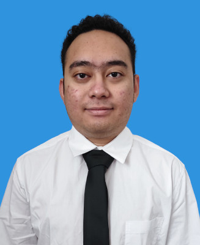

Welcome, I am
Alif Aiman Bin Othman.
Computer Science Graduate & Junior Network Engineer
Professional Summary
Recent graduate of University of Malaysia Sarawak (UNIMAS) Majoring in Computer Science (Network Computing). Managed Library and IT assets for 1 year and 6 months, and successfully executed projects involving the deployment of IP telephones and servers during an internship. Equipped with strong teamwork, leadership, and analytic skills, driving technical efficiency and seamless digital integration.
Work Experience
Internship (Junior Network Engineer)
VEMAX DISTRIBUTION SDN BHD. March 2025 - August 2025- Troubleshooted client network issues through remote applications or physical troubleshooting.
- Generated and created network heat maps for clients.
- Coordinated with the supervisor on network device setup (Access Point, Network switch) to be delivered to clients.
- Coordinated the deployment of IP telephones and servers under supervision.
- Prepared alongside the supervisor and employees during physical, on-site network troubleshooting.
IT Executive cum Librarian
SEGi College Sarawak January 2021 - August 2022- Conducted daily computer maintenance routines.
- Troubleshooted problems requested by staff members, including staff laptop repairs, item requests, and printer maintenance.
- Monitored and maintained a file server that hosted 10TB of data.
- Managed the circulation and cataloging of academic books by purchasing 5 academic books every month.
- Scheduled monthly library activities, hosting 5 activities per month.
- Designed and monitored the library website, making sure it was updated every 1 month.
Academic Projects
Final Year Project
Real-Time Bahasa Isyarat Malaysia (BIM) Translation System
- Designed and developed an Android-based prototype application to translate Bahasa Isyarat Malaysia (BIM) sign language into text in real-time.
- Engineered a data processing pipeline using the MediaPipe framework and CameraX API to extract 21 3D hand landmark coordinates from live video frames.
- Trained and optimized Deep Neural Network (DNN) and stacked LSTM models using TensorFlow, exporting them to TensorFlow Lite for efficient on-device mobile deployment.
- Programmed the mobile application using Kotlin and Android Studio, implementing real-time video stream processing and coordinate normalization.
Kotlin
TensorFlow Lite
MediaPipe
Android Studio
Group Project (TMN4133)
Linux System Monitor Utility
- Developed a system monitoring utility for Linux environments using C/C++.
- Utilized
dirent.handstat()functions for robust file statistics and directory traversal operations. - Collaborated with team members using Git for version control and code integration.
Education
Bachelor's Degree in Computer Science
Network Computing
University of Malaysia Sarawak (UNIMAS)
Sep 2022 - Nov 2026
CGPA: 3.23
Diploma in Information Technology
SEGi College Sarawak
Jun 2017 - Nov 2020
CGPA: 3.76
Skills & Awards
IT & Infrastructure
Computer Maintenance
Networking (LAN/IP Setup)
Software, Web & Machine Learning
Python
Kotlin
Java
C/C++
HTML/CSS/JS
MySQL
TensorFlow
MediaPipe
Languages & Awards
- Proficient in English, Malay, and Japanese
- SEGi Principal Award (July 2018)
- Drobotex Participation Award